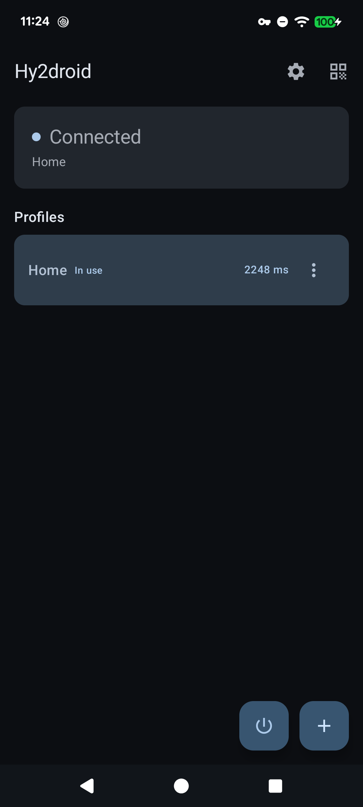
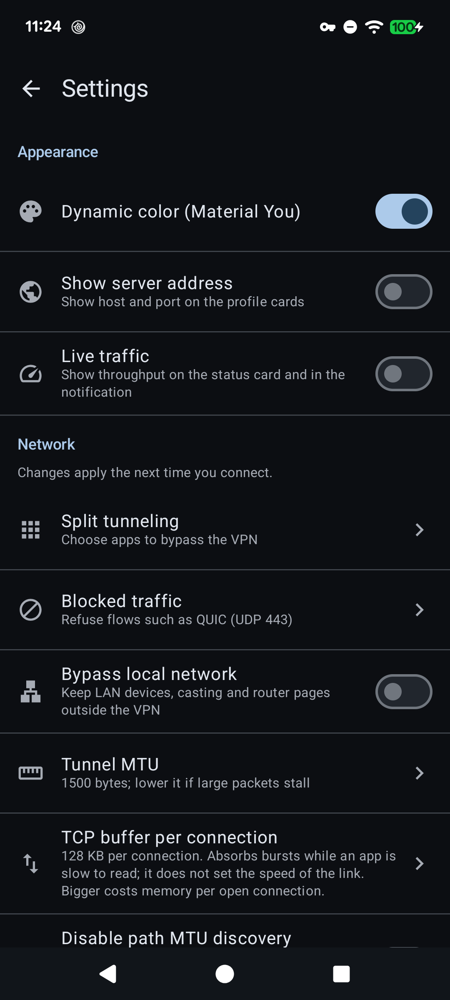

加入伺服器
貼上 hysteria2:// 連結、用相機掃 QR 碼（不經過網路），或在瀏覽器點連結交給 App。App 把每一個加入的伺服器叫做「節點」。已連線時切換伺服器會重新建立連線。
Hysteria 2 / Android 11+ / 免 root
Hy2droid 是一個 Android App，把手機連到跑 Hysteria 2 的伺服器 ——Hysteria 2 是一種繞過封鎖與限速的協定。 它只是手機這一端：伺服器位址由架站的人以分享連結或 QR 碼提供。 連上之後，手機上各 App 的流量就改由那台伺服器出去。 需要 Android 11 以上；不用 root、不用 Google 帳號，也沒有設定檔要改。


加入伺服器、按下連線，手機的上網流量就從它出去。主畫面會顯示目前是否連上、 用了多少流量，連不上時也會指出是哪一步失敗。
貼上 hysteria2:// 連結、用相機掃 QR 碼（不經過網路），或在瀏覽器點連結交給 App。App 把每一個加入的伺服器叫做「節點」。已連線時切換伺服器會重新建立連線。
兩種位址的流量都走這條連線。伺服器欄位可以填網域名稱或位址，port 另外填。
可以指定哪些 App 不經過這條連線。Android 13 以上還能讓本機網路流量留在本地，印表機、NAS 與投放才不會斷。
連不上時狀態卡會說哪一步失敗：名稱解析不到、TLS 失敗、密碼被拒絕，或完全沒有回應。診斷頁可以再跑測試、匯出遮蔽後的日誌。
加入的伺服器存在 App 的私有儲存空間。沒有帳號、沒有分析、沒有 crash 回報，也沒有更新檢查。
只支援 Hysteria 2。一個伺服器就是一條分享連結：沒有訂閱 URL，也沒有 App 內更新——新版本從 Releases 下載。預設的名稱查詢只回 IPv4 位址，所以要連 IPv6-only 的網站時要關掉「在通道內回答 DNS」。App 預設封鎖 QUIC（HTTP/3 用的傳輸方式，UDP 443 埠），可在「被封鎖的流量」調整。
整個 App 只有兩個畫面：主畫面看狀態與已存的伺服器，設定則在右上角的齒輪裡。


伺服器欄位接受網域名稱、IPv4 或 IPv6 位址，port 另外填（預設 443）。
2001:db8::1
IPv6 字面量可以直接當伺服器位址
App 裡不需要加括號。伺服器與 port 是兩個欄位，裸 IPv6 位址不會有歧義； 分享連結裡帶括號的位址也照同樣方式讀取。
APK 由 CI 從這個 repo 建置並簽章，不需要帳號，也不用經過商店。
現代手機用 arm64-v8a。不確定架構就用通用版，檔案大一點但每個 ABI 都能跑；arm32 與 x86 的分割檔在 release 頁面。
Android 只會問一次是否允許瀏覽器或檔案管理器安裝未知來源 App；這個權限之後可以收回。
開 App，按 +，貼上分享連結或掃供應商給的 QR。整個過程不會上傳到任何地方。
同意 VPN 提示，每個 App 只問一次。Android 17 會再問一次本機網路權限，拒絕也不影響連公網節點。
預期看到：安裝後 App 開在空白的主畫面；連上之後狀態卡與通知顯示同一個狀態。失敗時會指出是哪一步。
安裝前先核對檔案。每個 release 都會在 APK 旁附上
SHA256SUMS.txt。在下載目錄執行
sha256sum -c SHA256SUMS.txt --ignore-missing（沒下載的分割檔會跳過），
再執行 apksigner verify --print-certs app-arm64-v8a-release.apk，
把它印出的 Signer #1 certificate SHA-256 digest 與下面這個值比對。
手機上可以用 AppVerifier 這類 App 看已安裝 APK 的同一組指紋。
debug 與 release 使用不同金鑰。Android 不會允許互相覆蓋，請先解除安裝 debug 版。 Release 簽章憑證 SHA-256： af:9c:2f:a9:ac:ff:cd:5a:f4:d0:a2:d7:92:4e:c4:51:85:11:8a:df:37:ee:eb:a3:8e:4d:da:54:7d:d4:bf:9b
給想在安裝前先確認的人。
VpnService），IPv4 + IPv6系統需求、下載與已知限制。
免費。Hy2droid 是 AGPL-3.0 的自由軟體，完整原始碼、建置腳本與 release workflow 都在 repository 裡。要花錢的只有你自己的伺服器（如果有的話）。
支援，前提是手機當下的網路到得了那個位址族別。IPv6 字面量直接填在伺服器欄位即可，只有 AAAA 的域名也能用。雙棧域名 core 會優先 IPv4 且不 fallback，所以 IPv4 壞掉時請改用 AAAA-only 域名或 IPv6 字面量。
近幾年的手機幾乎都是 arm64-v8a。armeabi-v7a 給老舊 32 位元裝置，x86_64 給模擬器與少數平板，通用版 到處都能跑但檔案較大。
幾乎都是下載不完整，或裝置上已有另一把金鑰簽的舊版本。先重新下載；還是不行就解除安裝舊版（debug APK 不能被 release APK 覆蓋）。
預設模式在通道內回答 A 查詢，設計上不提供 AAAA。需要連 IPv6-only 的目的地時，請到「設定 → 網路 → 進階」關掉「在通道內回答 DNS」，改用轉發解析器。這不影響連 IPv6-only 的伺服器。
都不需要。它用 Android 內建的 VPN 服務（VpnService），de-Googled ROM 也能跑。QR 掃描用 CameraX 與 ZXing 在本機完成，不經過任何網路服務。
沒有。每個版本都是放在 GitHub Releases 的簽章 APK；安裝時要對下載它的瀏覽器或檔案管理器開一次「安裝未知來源應用程式」權限。
只支援 Hysteria 2。這是刻意的取捨：一個節點就是分享連結裡的那幾個值，不是通用代理設定。